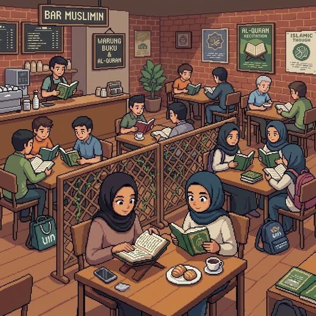
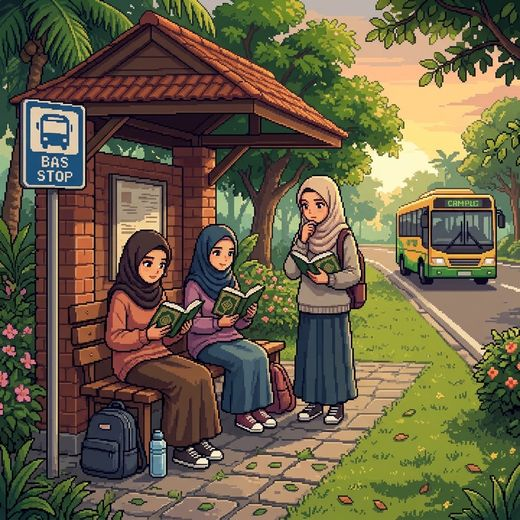

Tajuk buletin utama
Ringkasan berita atau pengumuman terkini diletakkan di sini.
Re:Quran ialah gerakan pelajar untuk menghidupkan kampus kita dengan Al-Quran. Bukan sekadar di surau, tetapi dalam setiap kuliah, setiap sesi study lewat malam dan setiap persahabatan yang kita bina.
Ini bukan sekadar acara. Ini gerakan pelajar yang saling mengajak dan saling menguatkan. Sertai kami dari 9 November hingga 20 Disember 2026 dan bawa seorang kawan.


Lari merentasi kampus: elak halangan dan kutip bintang nur. Tak perlu log masuk, terus main!
Kutip bintang nur
dan elak halangan.
Kiri/kanan: tukar lorong. Atas: lompat. Bawah: guling. Atau leret skrin.
Mata anda: 0. Masukkan nama untuk simpan rekod:
Ringkasan berita atau pengumuman terkini diletakkan di sini.